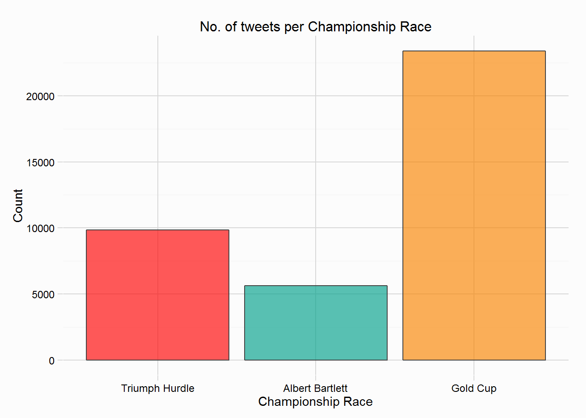

Day Four of the Festival saw more people tweet and more tweets than the previous two days, however it wasn’t close to the number sent on Day One, overall there were 64494 tweets collected. Tweets were collected if they mentioned any of the runners in the Championship Races (Grade 1s), or a number of related words. As mentioned in the post about Day One, casual fans aren’t as likely to maintain interest over the four days, but casual fans probably did return for the climax of the Festival.
The horses ‘tracked’ on day four are shown in the table below:
| Day | Race | Time | Horses | n |
|---|---|---|---|---|
| 4 | Triumph Hurdle | 13:30 | Baraka De Thaix, Beltor, Devilment, Dicosimo, Hargam, Kalkir, Karezak, Matorico, Officer Drivel, Old Guard, Pain Au Chocolat, Peace And Co, Prairie Town, Stars Over The Sea, Take A Break, Top Notch, Petite Parisienne | 17 |
| 4 | Albert Bartlett | 14:40 | Arbre De Vie, Avant Tout, Black Hercules, Blaklion, Caracci Apache, Carningli, Definitly Red, Fletchers Flyer, Kylemore Lough, Martello Tower, Measureofmydreams, Milsean, Native River, No More Heroes, Out Sam, Shanroe Santos, Shantou Bob, Tea For Two, Thomas Brown, Value At Risk | 20 |
| 4 | Gold Cup | 15:20 | Bobs Worth, Boston Bob, Carlingford Lough, Coneygree, Djakadam, Don Cossack, Holywell, Home Farm, Houblon Des Obeaux, Lord Windermere, Many Clouds, On His Own, River Choice, Road To Riches, Sam Winner, Silviniaco Conti, Smad Place, The Giant Bolster | 18 |
The plot below shows the timeline on Day Three, included in the plot are three vertical lines charting the start times of the various races. These races were the Triumph Hurdle (13:30), the Albert Bartlett Novices Hurdle (14:40) and the Gold Cup (15:20). The frequency of tweets is slightly higher than on previous 2 days, and the culmination of the Gold Cup, won by Coneygree prompted a big reaction from the twitter crowd.
The two plots below shows the number of tweets that mention a runner from each Championship race, and the most mentioned horses. The most tweeted about race on Day Four was the Gold Cup, with 10294 tweets.

The race I’ll focus on in this post is the Gold Cup, but if anyone wants to see other races, then let me know.
The Gold Cup featured a relatively large field, with 18 runners, but it was won in very impressive fashion by novice Coneygree, the first time a novice had won the Gold Cup since Captain Christy in 1974. The plots below shows the number of tweets sent per minute that mentioned one of the 18 runners, and the sentiment of those same tweets of 10minute intervals. The volume of tweets increased massively as Coneygree romped home from the front. Also plotted in the sentiment plot is a loess curve, showing that sentiment of the race/winner is extremely positive, growing even more positive as the result sinks in. This was by far the most positive reaction to the winners over the entire Festival, a post looking at the winners of the Grade 1 races should be written up eventually.
Also of interest is which horses were popular on twitter, is there any wisdom in the twitter crowd? The plots below show the number of tweets that mention each of the 18 runners, the plot on the left is restricted to those tweets sent before the race, the plot to the right is tweets after the race. Silviniaco Conti was the favourite on twitter and was mentioned in 41.4% of tweets that mentioned any runner in the race, he was sent off at 3/1 (implied ~25% chance of victory) by the bookies. Coneygree led from start to finish, setting a fierce gallop and jumping aggressively, putting rivals under pressure, it’s no surprise that he dominated the post race mentions in 77.3% of tweets.